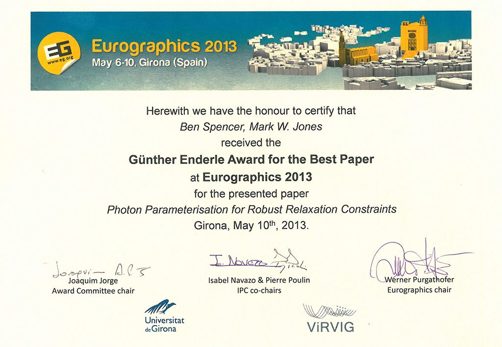

Photon Parameterisation for Robust Relaxation Constraints
Ben Spencer and Mark W. Jones
Abstract
This paper presents a novel approach to detecting and preserving fine illumination structure within photon maps. Data derived from each photon's primal trajectory is encoded and used to build a high-dimensional kd-tree. Incorporation of these new parameters allows for precise differentiation between intersecting ray envelopes, thus minimizing detail degradation when combined with photon relaxation. We demonstrate how parameter-aware querying is beneficial in both detecting and removing noise. We also propose a more robust structure descriptor based on principal components analysis that better identifies anisotropic detail at the sub-kernel level. We illustrate the effectiveness of our approach in several example scenes and show significant improvements when rendering complex caustics compared to previous methods.
Related Files
 Local Copy
Local Copy
 Open Access Link
Open Access Link
 Video
Video
 Best paper award
Best paper award
DOI
10.1111/cgf.12028
https://dx.doi.org/10.1111/cgf.12028
Citation
Ben Spencer and Mark W. Jones, Photon Parameterisation for Robust Relaxation Constraints, Computer Graphics Forum, 2013, 32(2pt1), 83-92. https://dx.doi.org/10.1111/cgf.12028
BibTeX
@article{RobustPhotonRelaxation,
author = {Spencer, B. and Jones, Mark W.},
title = {Photon Parameterisation for Robust Relaxation Constraints},
journal = {Computer Graphics Forum},
volume = {32},
number = {2pt1},
pages = {83--92},
date = {2013-05-07},
year = {2013},
month = {may},
issn = {1467-8659},
doi = {10.1111/cgf.12028},
publisher = {Blackwell Publishing Ltd},
url = {https://dx.doi.org/10.1111/cgf.12028}
}